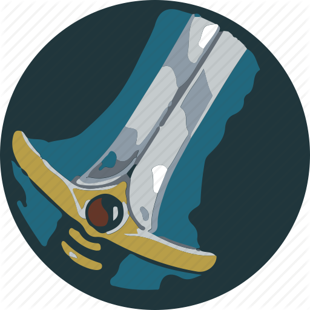
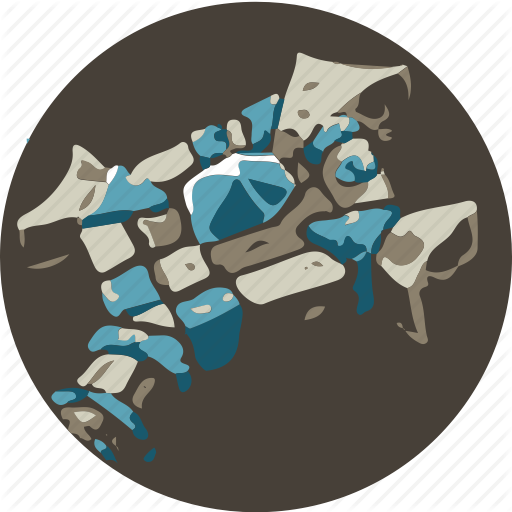
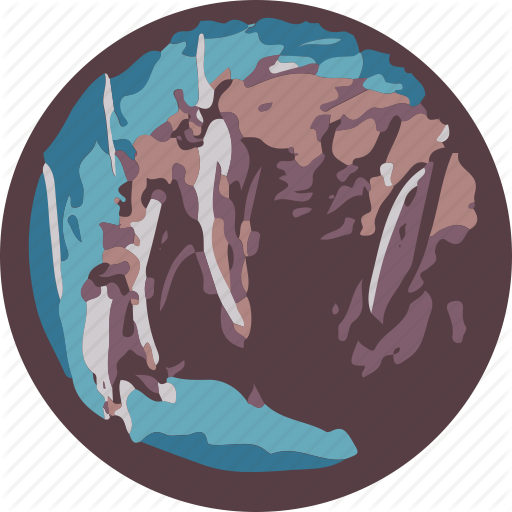
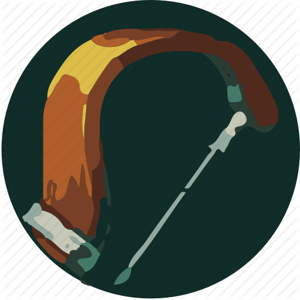

Een class (klasse) is een manier om de avonturen van World of Warcraft te beleven. Het bepaalt wat voor armor en wapens je kunt gebruiken, ook bepaalt het wat voor vaardigheden, krachten, capaciteiten en spells je kan gebruiken.
Je moet wel oppassen want als je een bepaald ras kiest beperkt dat het aantal class dat je kan kiezen. Hoe verder een karakter vordert hoe meer vaardigheden je kunt kiezen door middel van talentenpunten door in een van de drie soorten scholen vaardigheden te kiezen die elke class heeft.
Een manier om je karakter te verbeteren is tier/dungeon sets te verzamelen als je het maximum level hebt bereikt. De meeste Dungeons and Raid class-sets bestaan uit armor stukken ontworpen voor een specifieke class .
Een klasse bepaald ook grotendeels of je spel leuk vindt of niet. Het is heel belangrijk om een klasse te kiezen die goed aanvoelt.
| class | kenmerken | |
|---|---|---|
 |
Paladin | Paladin is een hybride class die zich erg focust op het verdedigen van hun groepsgenoten met melee-gevechten en healen van hun vrienden. Ze zijn erg sterk in groepsondersteuning en buff-vaardigheden. Ze mogen de sterkste soort armor dragen genoemd Plate en kunnen schilden dragen net als een Warrior en Shaman. Als je de juiste vaardigheden gekozen hebt kunnen ze erg goed healen omdat ze heel veel damage kunnen incasseren. Ze kunnen net als de Druid meerde functies aannemen zoals de Warrior en Priest. Ze kunnen de groep redden door zichzelf op te offeren. |
|  | Warrior | Warrior is een class die zich specialiseert in melee combat en 'tanken'. Ze zijn goed tegen vijanden en bosses, omdat ze veel schade kunnen incasseren en uitdelen. Ze genereren veel 'threat' (dreiging), zodat ze de aggro kunnen houden van de andere spelers, zodat die rustig kunnen healen en damage kunnen toebrengen. Ze kunnen goede melee damage met wapens toebrengen als het nodig is. Warriors gebruiken in tegenstelling tot Rogues and Spellcasters 'Rage' (woede) die zich aanvult zodra ze damage krijgen en uitdelen, maar verdwijnt als ze niet in gevecht zijn. Ze zijn erg van wapens en armor afhankelijk, want als de wapens en/of de armor slechte kwaliteit hebben, zijn ze vaak nutteloos. |
|  | Priest | Priests zijn de meest flexibele class als healer ook al kunnen ze krachtige offensieve spells gebruiken. De Priest heeft een hele hoop healing spells met ook nog een paar handige truuks om de Levens punten van een class te verhogen en de kracht om iemands gedachte te beheersen en een erg krachtige spell om bepaalde magische effcten te verwijderen en bepaalde ziektes te verwijderen. Sommige Priests gaan de kant van de Schaduw op in plaats van het licht en kunnen ze tijdelijk Schaduw vorm aannemen die hun damage verhoogt en kunnen de Mana punten van hun groepsgenoten herstellen op hogere Niveau's maar ondertussen kunnen ze niet healen. |
| Warlock | Warlocks gebruiken demonen (deze zijn vergelijkbaar met de hunters' pet), duistere magie en vloeken om hun tegenstanders te beheersen en om schade toe te brengen. De warlocks brengen vanaf een afstand schade toe met DoTs (Damage over Time), ze hebben ook vele andere aanvallen en gebruiken AoE (Area of Effect). Hoewel Warlocks een groot arsenaal aan spreuken hebben, kunnen ze niet net zo snel damage toebrengen als een Mage. Net zoals de mage de crowd-control mogelijkheid "polymorph" heeft, heeft de warlock de mogelijkheid om zijn tegenstander te "fearen". Ook zijn warlock heel nuttig in dungeons omwille van het feit dat zij Healthstones (een item voor leven te herstellen tijdens een gevecht) en Soulstones (een item waarmee je jezelf kan ressurecten als je gestorven bent) kunnen maken. | |
|  | Druid | Druids zijn een hybride class die meerdere gedaanten kunnen aannemen door te shapeshiften. Zij beschikken over de volgende forms: een Bear Form die vergelijkt kan worden met een Warrior tank, stealth en vechten in Cat Form zoals een Rogue, healen unshapeshifted als een Priest of Shaman, of in Tree of Life form, spells casten als een Mage in Moonkin vorm. Daarnaast hebben ze ook nog een reisform (cheetah) vliegform (class en race dependend, maar het is een vogel) en een zwemform, zeeleeuw. Hoewel ze verschillende functies hebben kunnen ze er maar één tegelijk uitvoeren. Ze veranderen van vorm om andere functies aan te nemen. Door talentpunten in bepaalde vaardigheden te investeren kan een Druid net zo goed zijn als elke andere class in Raids of Dungeons. |
|  | Hunter | Hunters zijn de enige classe die goed vanaf een afstand met wapens zoals een boog of een geweer schade kunnen toebrengen als primaire schade. Ze hebben veel vaardigheden om melee-gevecht uit te stellen waar ze best zwak in zijn. Ze kunnen verschillende soorten dieren temmen om ze te gebruiken als combat pet. Met uitstekende vaardigheden om te overleven zijn ze een perfecte solo-class. |
| |
Rogue | rogues zijn sluipmoordenaars die met twee wapens tegelijk kunnen vechten en onzichtbaar kunnen worden. Ze kunnen krachtige finishing moves vrijspelen die met elke combo point sterker wordt.. |
| |
shaman | Shamans zijn een van de meest veelzijdige classes door Healing Magische damage en melee gevecht. Ze zijn een steunkarakter die zo om kunnen schakelen naar een andere functie. Door hun burst damage zijn ze erg goed in PvP. Ze helpen hun groepsgenoten door totems neer te zetten die een bepaald Aura uitstraalt zoals healing damage en buffs wat allemaal extra is voor de groep. Als de groep doodgaat door een fout kan de Shaman zichzelf weer tot leven brengen met een vaardigheid, waarna hij de rest weer tot leven kan wekken. |
{kind=link}
{kind=link}
{kind=link}
{kind=link}
{kind=link}